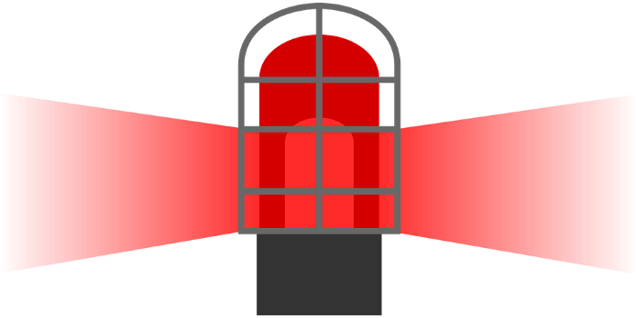
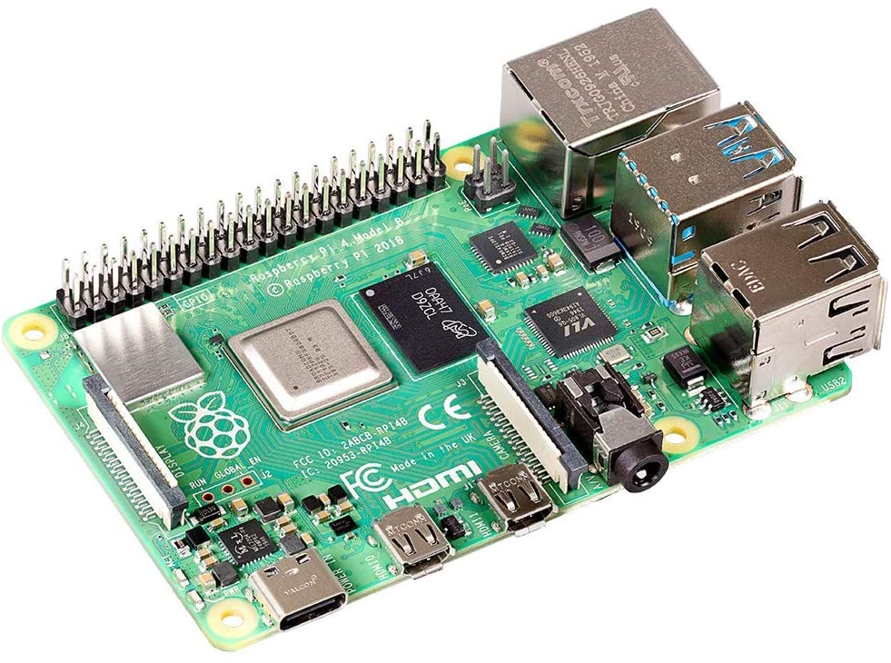

Archive | Home Automation
DIY Goal Light Using a Raspberry Pi
I built this project to improve my API skills and make something fun that tied into hockey. The setup flashes my lights when my favorite NHL team scores.


It mixed live sports data with home automation and ended up being one of the more satisfying smaller projects I built because the result was immediate and actually fun to use during games.
Projects like this are a big part of why I enjoy side work so much. They are practical, playful, and teach you a lot at the same time.